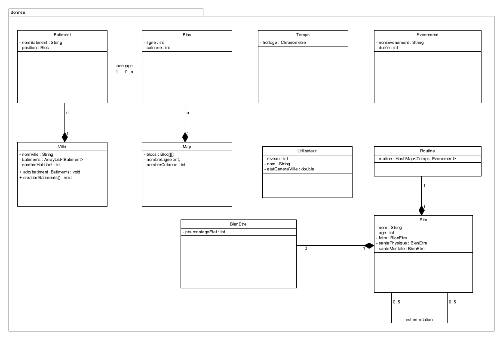

Nous avons d'abord commencé, lors de la première séance de TD par rassembler les différents informations importantes
liées au projet puis nous avons petit à petit conçu le cahier des charges. Nous avons créer les règles du jeu, les
différents personnages qui constitueront notre jeu, ainsi que chacune de leur routine. Cette étape fut cruciale pour le reste
du projet, car elle constitue la logique et le fonctionnement sur lesquels nous allons devoir nous baser pour pouvoir developper le logiciel.
Nous avons ensuite, durant la deuxième séance de TD, conçu le diagramme des classes dans lequel se trouvent uniquement les classes de données, ce ne sont pas celles
qui assureront directement le fonctionnement du logiciel. Il nous permet de savoir avec quoi nous commençons à coder.
Ces classes doivent donc être implémentés et formeront une base pour notre logiciel puisque se sont elles qui seront manipulées
afin de faire fonctionner le logiciel (grâce à d'autres classes).

Figure 2 : Diagramme des classes de données
Debut du code
Enfin, avant la troisième séance, nous avons commencé à coder. Nous avons d'abord crée une map que nous avons ensuite
ajusté selon nos choix : c'est à dire que nous avons mis à chaque emplacement précis une maison, un lycée, un cinéma, etc...
Chaque établissement est représenté par une couleur. Puis nous avons ajouté un sim sous forme de rond qui se déplace d'un endroit à un autre de manière aléatoire dans notre ville.